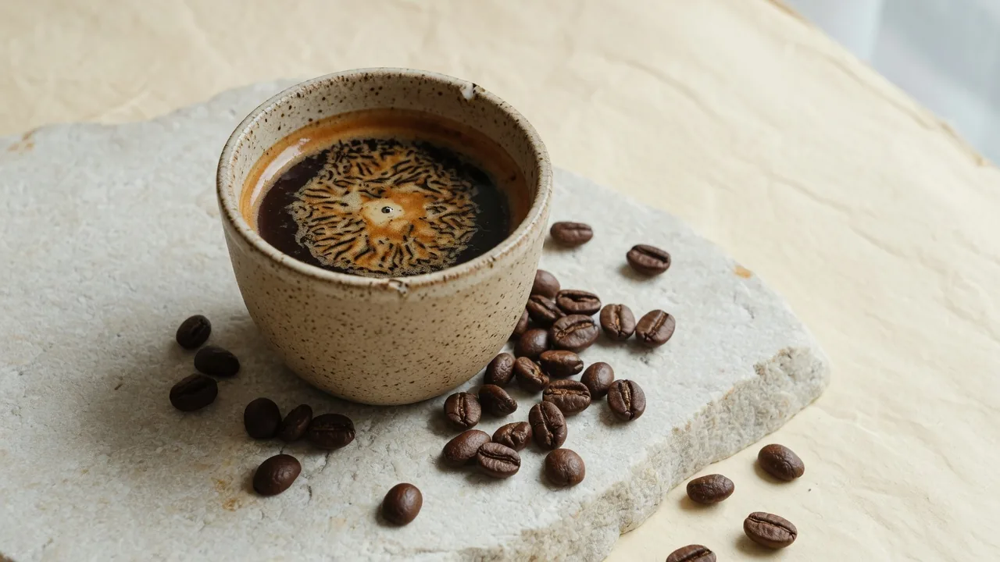
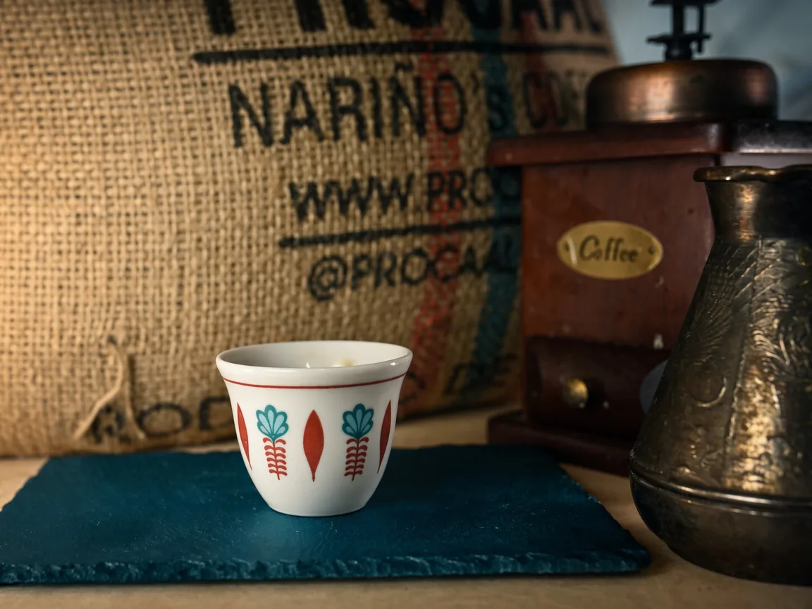

★★★★★
Потрясающий кофе с душой и историей. Чувствуется качество в каждой чашке.
Спешелти кофе · Ливанские корни
Мы обжариваем кофе небольшими партиями, сохраняя характер каждого зерна. От истоков в ливанских горах — до вашей чашки.

Свежая партия
Ключевая модель
Свежая обжарка под ваш ритм. Пауза и отмена — в один клик.
Наше наследие
С XVI века кофе в Ливане — знак уважения и живая традиция. Al Jar продолжает её в современном формате: семейный бренд, полное производство в России, внимание к зерну и ритуалу.
Мы специализируемся на эспрессо и ливанском кофе, а также обжариваем под гейзер, френч-пресс, фильтр и турку.

Что говорят о нас
Потрясающий кофе с душой и историей. Чувствуется качество в каждой чашке.
Подписка — лучшее решение. Кофе всегда свежий, а доставка как по волшебству.
Премиум-качество и вдохновляющая история. Гордимся тем, что выбираем Al Jar.